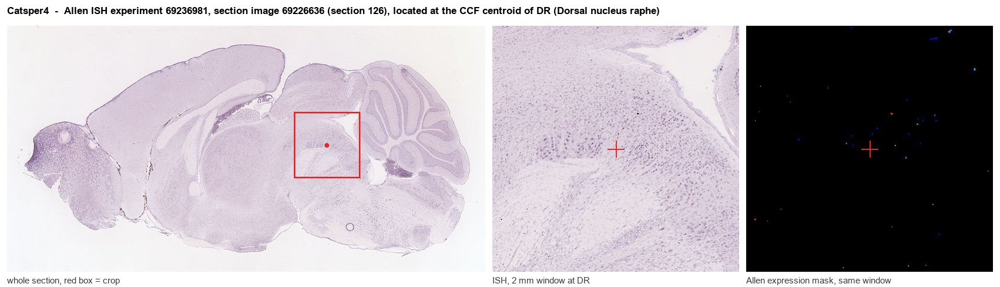
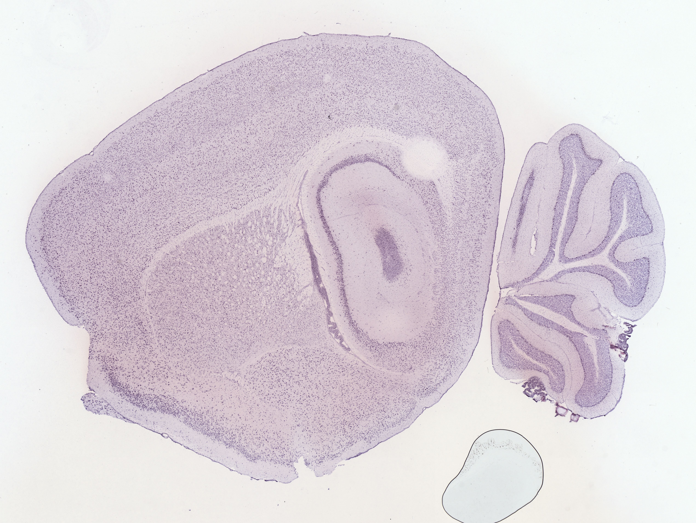
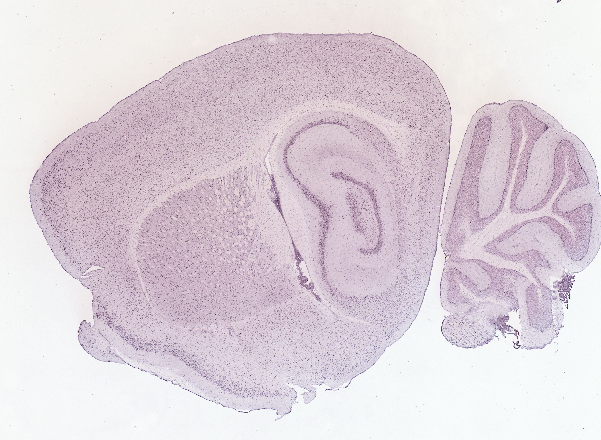
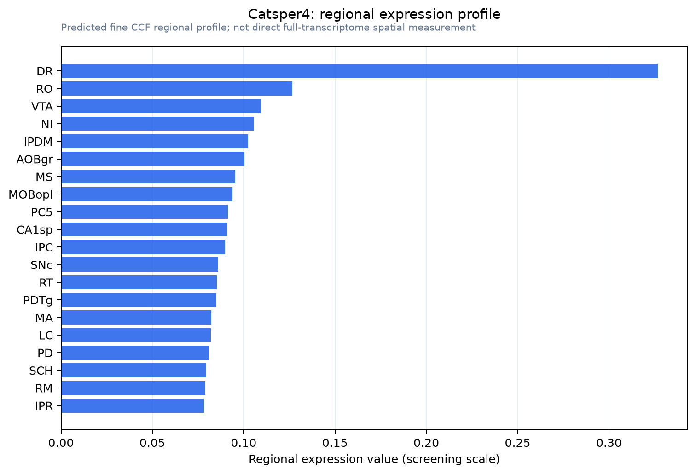

Catsper4
Cation channel sperm-associated protein 4 (CatSper4)
Spatial tier: STRICT_EXCLUSIVE · Class: ION_CHANNEL · Top region: DR (Dorsal nucleus raphe) · Positive regions: 8/554
44.1Discovery Score
35.7Targetability Score
CEvidence grade C
What this means: Catsper4: predicted fine-region profile is strict-exclusive, with 8 positive regions out of 554 (limit 12); direct spatial validation is required.
Function in DR: evidence, prediction, innovation
- Gene function
- Catsper4 encodes one of the four pore-forming alpha subunits of the CatSper channel, a weakly voltage-dependent, alkalinisation-activated Ca2+ channel complex. CatSper1-4 must all be present to assemble a functional channel; it is the principal Ca2+ entry route of sperm and is gated by intracellular pH (and in human sperm by progesterone). No physiological role outside the sperm flagellum has been established.
- Region function
- The dorsal raphe is the main forebrain-projecting serotonergic nucleus, also containing GABAergic, glutamatergic and dopaminergic cells, and shapes mood, patience and reward waiting, aversive processing and sleep-wake state.
- Published in this region
- inferred No region-specific literature found. The closest evidence is that Catsper4 knockout mice are infertile because sperm fail to develop hyperactivated motility (Jin et al. 2007, Biol Reprod), with an Allen mouse ISH dataset (69236981) the only brain-level resource; dorsal raphe cell-type atlases such as Huang et al. 2019 (eLife) define ~18 neuron subtypes without assigning Catsper4 a role.
- Predicted function
- Prediction: if Catsper4 transcript in the dorsal raphe is genuine and translated, it would provide a pH-sensitive Ca2+ entry pathway in serotonergic or neighbouring neurons, coupling intracellular alkalinisation (which accompanies bursts of activity and metabolic load) to Ca2+-dependent firing adaptation or 5-HT release. Knockout would then be expected to alter burst firing and terminal serotonin release under high activity, producing subtle changes in patience/waiting or stress-coping behaviour. The strong alternative hypothesis is low-level, non-functional transcription, so single-molecule FISH with Tph2 and a conditional allele should precede any behavioural work.
- Innovation
- ★★★★★ 5/5 There is no published work at all on CatSper subunits in central neurons, so any validated raphe function would be new biology.
- Tools
- Catsper4 knockout mice (Jin et al. 2007); CatSper blockers HC-056456 and mibefradil (non-selective); serotonergic drivers Slc6a4-Cre (JAX 014554) and ePet-Cre (JAX 012712) for intersectional access; Allen mouse ISH dataset 69236981. No validated brain-grade CATSPER4 antibody.
- References
Direct evidence located at the region

Allen ISH experiment 69236981, section image 69226636 (section 126): the section that contains the CCF centroid of Dorsal nucleus raphe according to the Allen image-to-atlas alignment (reference_to_image), with a 2 mm window around that point. Left: whole section, red box = window. Middle: ISH signal. Right: Allen's expression-mask view of the same window. open this image in the Allen viewer
Look it up yourself: Allen Mouse Brain ISH for Catsper4Allen reference atlas: DR (structure 872)ABC Atlas MERFISH viewer(in the ABC Atlas choose dataset MERFISH-C57BL6J-638850-CCF, colour cells by gene "Catsper4" or by parcellation_substructure "DR")All genes confined to DR + 3-D brain
Direct spatial evidence
MERFISH REGION LOCATOR

DIRECT ALLEN ISH

DIRECT ALLEN ISH

Regional expression figure

Predicted WMB × fine-CCF profile; not direct full-transcriptome spatial measurement.
Spatial profile
Evidence and specificity
- Evidence status
- PREDICTED_FINE
- Direct sources
- None; predicted localization only
- Exclusive threshold
- 12 positive regions out of 554
- Spatial specificity
- 0.308
- Top-region fraction
- 0.097
- Filter status
- PASS
Interpretation limits
- Cell-type-to-region projection is imputed expression, not direct spatial measurement.
- Adult reference atlases do not establish stability across age, sex, strain, state, or disease.
- Transcript abundance does not guarantee protein abundance or genetic-tool performance.